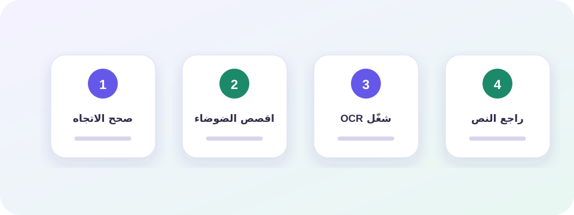
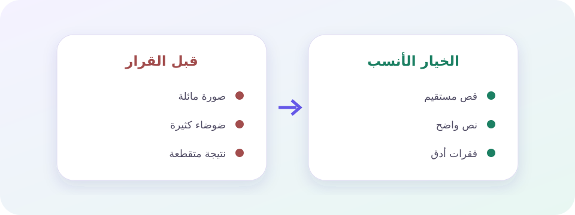
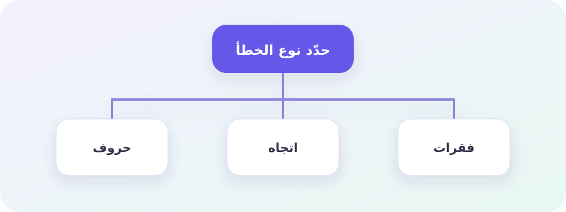

ما الذي يحدث قبل ظهور النص القابل للنسخ؟
اختصار OCR يعني التعرف الضوئي على المحارف. تبدأ العملية بصورة لا تحتوي «كلمات» تقنيًا، بل شبكة من البكسلات. يحاول المحرك تحديد مناطق الكتابة، وتقسيمها إلى أسطر، ثم مطابقة أشكال الحروف بنموذج لغوي أو بصري وإعادة تركيب النص.
لهذا لا يكون استخراج النص من الصور عملية نسخ حرفي مضمونة. إذا التقت نقطة الباء بظل أو اندمجت أسنان السين بسبب ضغط JPEG، فقد يختار النموذج حرفًا آخر. ويزداد التحدي في العربية لأن الحروف تتصل ويتغير شكلها بحسب موضعها في الكلمة.
تعامل مع OCR كمسودة سريعة. راجع الأسماء والأرقام والتواريخ خصوصًا، لأنها قد تبدو صحيحة بصريًا مع أنها تغيرت.
أربع مراحل تحدد جودة النص المستخرج
يمر النظام عادة بتحسين الصورة، واكتشاف مناطق النص، والتعرف إلى الحروف، ثم تنظيف الناتج. يمكن أن تكون مرحلة واحدة سبب الخطأ كله: قص ناقص يحذف أول السطر، أو تدوير بسيط يربك التقسيم، أو نموذج لغة غير مناسب للعربية.

تهيئة الصورة
تصحيح اللون والتباين والحجم قبل القراءة.
اكتشاف التخطيط
تمييز الأعمدة والفقرات والصور عن سطور الكتابة.
التعرف إلى المحارف
تقدير الحروف والكلمات اعتمادًا على الشكل والسياق.
إعادة البناء
حفظ الأسطر والفواصل وتقديم نص قابل للمراجعة.
لماذا يختلف OCR العربي عن قراءة الحروف اللاتينية؟
يتغير شكل الحرف العربي في أول الكلمة ووسطها وآخرها، وتشترك حروف كثيرة في الهيكل وتفترق بالنقاط. كما يمكن أن تظهر الحركات فوق الحرف وتحته، وتتداخل مع السطر المجاور في الصور منخفضة الدقة. لذلك يحتاج استخراج النص العربي من الصورة إلى نموذج مدرب على العربية لا مجرد قارئ عام.
تضيف اتجاهات الكتابة المختلطة صعوبة أخرى: رقم لاتيني داخل فقرة عربية، أو رابط يبدأ من اليسار، أو جدول ثنائي اللغة. قد تكون الحروف صحيحة لكن ترتيبها خاطئًا، وهنا يجب فحص البنية لا الإملاء فقط.
| المظهر | السبب | الإجراء |
|---|---|---|
| ب/ت/ث مختلطة | نقاط باهتة أو ضغط قوي | ارفع الدقة أو استخدم التدرج الرمادي |
| ر/ز أو د/ذ | نقطة صغيرة قريبة من الحافة | اقصص النص بهامش بسيط |
| ترتيب الأرقام | اتجاه عربي/لاتيني مختلط | راجع السطر في محرر RTL |
| حركات زائدة | ضوضاء تشبه علامات التشكيل | جرّب وضع التباين أو احذف الضوضاء |
الدقة والقص والتباين: أيها يصنع الفرق الأكبر؟
لا توجد قيمة واحدة تضمن الدقة. صورة صغيرة لكنها حادة قد تتفوق على صورة كبيرة مهزوزة. القاعدة العملية هي أن يكون ارتفاع الحرف كافيًا لظهور النقاط والحواف، وأن يظل الفرق بين الكتابة والخلفية واضحًا دون سحق التفاصيل.

| الصورة | الخيار الأول | ما يجب تجنبه |
|---|---|---|
| لقطة شاشة | الأصلية مع قص الواجهة | تكبير مصطنع شديد |
| ورقة مصورة | استقامة وتدرج رمادي | ظل اليد وانعكاس الضوء |
| JPG مضغوط | تحسين تلقائي معتدل | تباين يحرق النقاط |
| مستند أبيض وأسود | تباين عالٍ بعد المعاينة | إزالة الحروف الرقيقة |
كيف يحافظ OCR على الفقرات ولماذا تتفكك الجداول؟
بعد التعرف إلى الحروف، يحاول المحرك استعادة بنية الصفحة: أين ينتهي السطر؟ هل الفراغ بداية فقرة؟ هل النص عمودان؟ الصور البسيطة ذات العمود الواحد أسهل من مجلة أو فاتورة أو جدول. وقد تكون الكلمات صحيحة لكن ترتيبها لا يطابق القراءة البشرية.
عند تحويل لقطة الشاشة إلى نص اقصص شريط الحالة والأزرار والإشعارات؛ لأنها كتل نصية حقيقية وقد تدخل في النتيجة. وعند رفع عدة صفحات، حافظ على ترتيب الملفات وراجع فاصل كل صورة قبل دمج الفقرات.
- سطر واحد أو عمود واضح قدر الإمكان.
- هامش صغير حول النص بدل قص الحروف.
- لا تخلط صورتين داخل لقطة واحدة.
- راجع الانتقال بين الصفحة والأخرى.
- أعد بناء الجداول يدويًا إذا كان ترتيب الخلايا مهمًا.
- احفظ نسخة الصورة للرجوع إلى الأرقام.
المعالجة داخل المتصفح وحدود الذاكرة
عندما يعمل OCR داخل المتصفح، تُقرأ الصورة في ذاكرة الجهاز ويُحمّل محرك التعرف وملفات اللغة من شبكة توزيع محتوى. لا تحتاج الصورة إلى الانتقال إلى خادم ToolRar، لكن الجهاز نفسه يستهلك الذاكرة والمعالج، خصوصًا مع الصور الكبيرة.
رفع عشر صور عالية الدقة دفعة واحدة لا يجعل النتيجة أفضل، وقد يبطئ الهاتف. المعالجة المتتابعة وإعادة استخدام عامل OCR واحد تقللان التحميل المتكرر. ويمكن فهم تفاصيل الواجهة من توثيق Tesseract.js الرسمي.
فصلنا بين جودة الصورة وجودة النموذج وبنية الصفحة، لأن كلمة «الدقة» تجمع ثلاثة أسباب مختلفة. لا نعد بنسبة ثابتة لكل صورة.
خريطة تشخيص لأخطاء قراءة النص من الصور
قبل إعادة المحاولة بالإعداد نفسه، حدد نوع الخطأ: حروف متشابهة، سطور مفقودة، ترتيب معكوس، أم نتيجة فارغة. لكل نوع نقطة بداية مختلفة.

النتيجة فارغة
تأكد أن الصورة تحتوي نصًا واضحًا، ثم جرّب اللغة الصحيحة والصورة الأصلية.
النقاط تتبدل
زد وضوح الحروف أو استخدم التدرج الرمادي بدل التباين القاسي.
بداية السطر مفقودة
أعد القص مع هامش حول الصفحة وتأكد من عدم ميل الصورة.
الفقرات مختلطة
عالج كل عمود أو منطقة مستقلة ثم اجمع النص يدويًا.
الأرقام بترتيب غريب
راجع اتجاه الحقل واستخدم محررًا يدعم العربية واللاتينية.
الملف بطيء
صغّر الأبعاد أو عالج الصور بالتتابع بدل فتحها جميعًا في وقت واحد.
سير عمل يحافظ على الفقرات والأرقام والمراجع
قبل القراءة: رتّب الملفات
سمّ الصور حسب ترتيب الصفحات، واحتفظ بالأصل، وحدد ما إذا كنت تحتاج النص كله أم فقرة معينة. القص المبكر يقلل ضوضاء لا تحتاجها.
أثناء OCR: اختبر صفحة ممثلة
ابدأ بصورة واحدة تحتوي الخط والحجم نفسيهما. إذا كانت النتيجة جيدة، طبّق الإعداد على بقية الدفعة؛ وإن لم تكن، أصلح الصورة قبل إهدار الوقت.
بعد الاستخراج: راجع بنظام
قارن الأسماء ثم الأرقام ثم علامات الفقرات. نزّل TXT للنص الخالص أو Word للمراجعة، ولا تحذف الصور قبل انتهاء التدقيق.
أسئلة شائعة عن دقة OCR العربي
هل يفهم OCR معنى النص العربي؟
يستخدم السياق لتحسين الاحتمال، لكنه لا يفهم المقصود كقارئ بشري ولا يضمن صحة الاسم أو الرقم.
ما الدقة المناسبة للصورة؟
المهم أن تظهر تفاصيل الحروف والنقاط بوضوح. لا توجد قيمة سحرية، وتفيد زيادة الحجم حتى حد معين فقط.
هل PNG أفضل من JPG دائمًا؟
PNG ممتاز للقطات الشاشة والحواف الحادة، بينما قد يكون JPG الجيد كافيًا للصور الفوتوغرافية. الوضوح أهم من الامتداد.
لماذا تفشل الجداول؟
لأن التعرف إلى الحروف منفصل عن فهم صفوف الجدول وأعمدته، وقد يحتاج التخطيط إلى إعادة بناء يدوية.
هل يدعم OCR خط اليد؟
قد يقرأ بعض الخطوط الواضحة، لكن النموذج العام أكثر ثباتًا مع النص المطبوع، وتختلف النتيجة بشدة بين الأشخاص.
اختبر صورة واحدة ثم ابنِ سير عملك
اختر عينة ممثلة، اقصص منطقة النص، وقارن النتيجة بالأصل قبل معالجة بقية الصور.
فتح أداة OCRهل كان هذا الدليل مفيدًا؟
اختر إجابة واحدة؛ يساعدنا التصويت على معرفة الأدلة التي تحتاج توضيحًا أو تحديثًا.